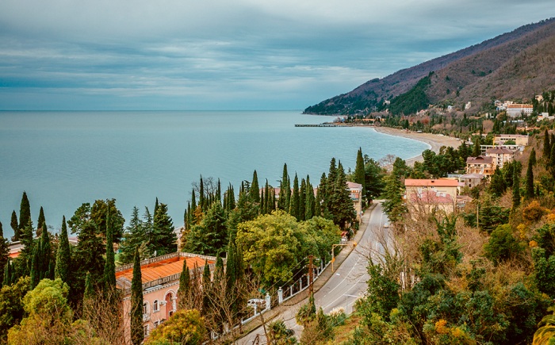

The Abkhazians call their homeland Аԥсны (Apsny, Aṗsny), popularly etymologised as "a land/country of the soul", yet literally meaning "a country of mortals (mortal beings)". It possibly first appeared in the seventh century in an Armenian text as Psin(oun), perhaps referring to the ancient Apsilians.

Abkhazia is part of Georgia's territory and has listed the province, in its
official subdivisions, as an autonomous republic On 28 August 2008, the
Parliament of Georgia passed a resolution declaring Abkhazia a
"Russian-occupied territory". The Republic of Abkhazia, with Sukhumi as its
capital, is a client state of Russia. It is formally recognised by Russia
and by Nicaragua, and the de facto independent republics of South Ossetia
and Transnistria. The European Union, OSCE, and NATO recognise Abkhazia as
an integral part of the territory of Georgia.
The secessionist movement of the Abkhaz minority led to the Georgian–Abkhaz
conflict. The War in Abkhazia resulted in a Georgian military defeat and the
mass exodus and ethnic cleansing of the Georgian population from Abkhazia.
There was a 1994 ceasefire agreement. There is a UN-monitored and
Russian-dominated CIS peacekeeping operation. The sovereignty dispute has
not been resolved. The dispute is a source of conflict between Georgia and
Russia.
Abkhazia is diverse geographically with lowlands stretching to the extremely mountainous north. The Greater Caucasus Mountain Range runs along the region's northern border, with its spurs – the Gagra, Bzyb and Kodori ranges – dividing the area into a number of deep, well-watered valleys.